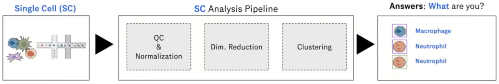
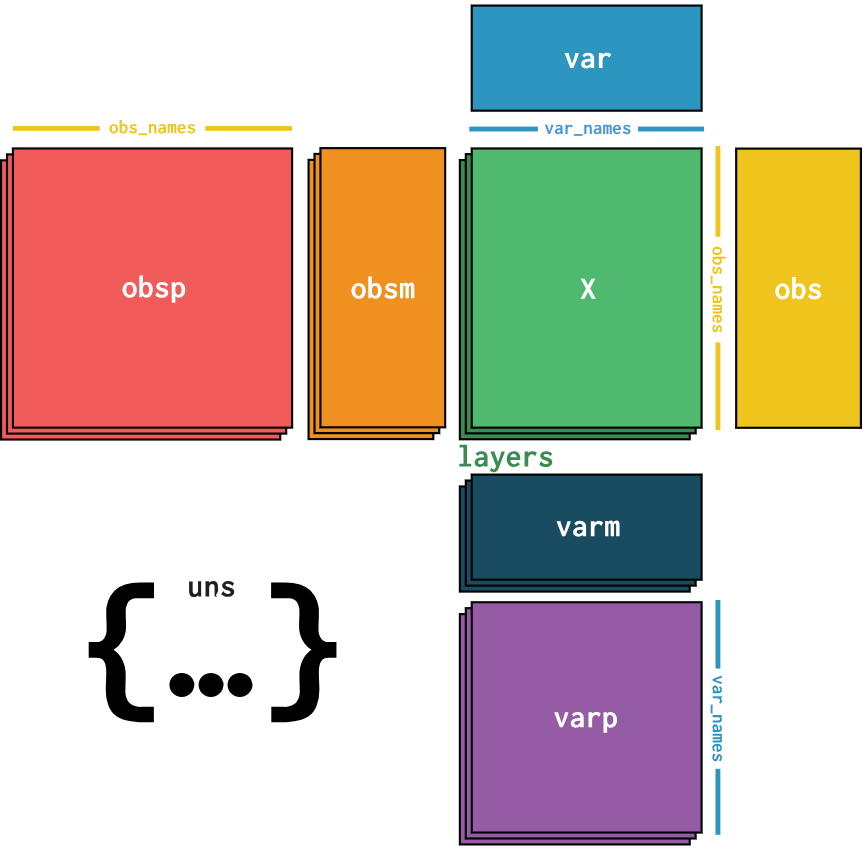
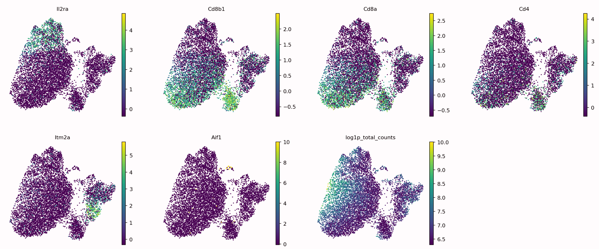
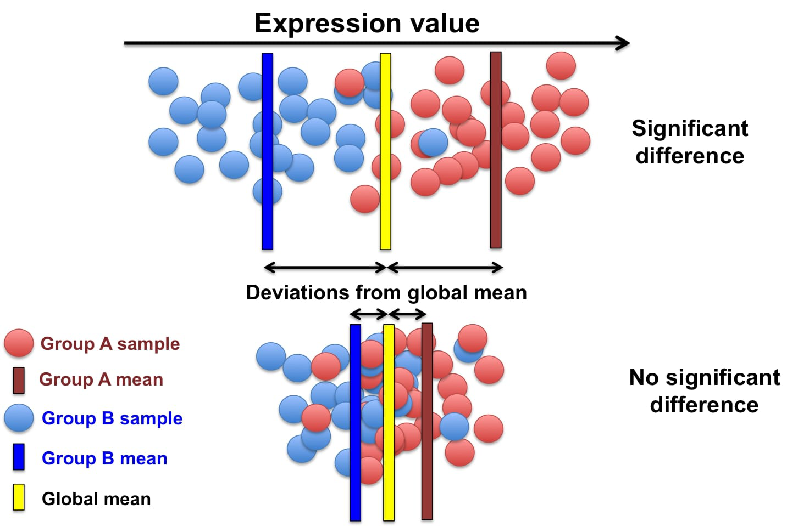
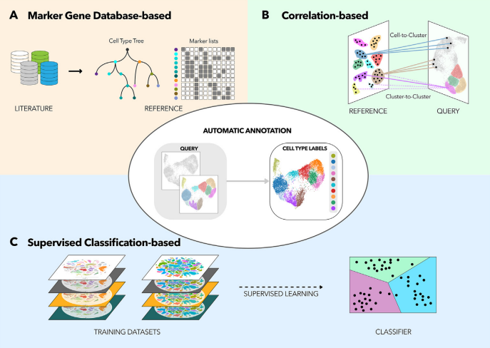
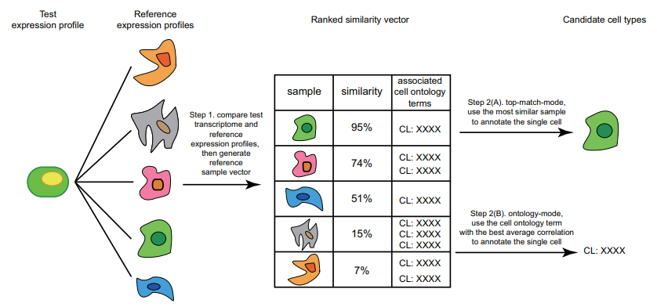
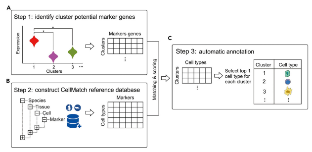
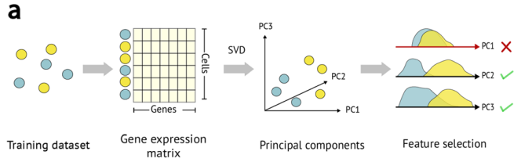
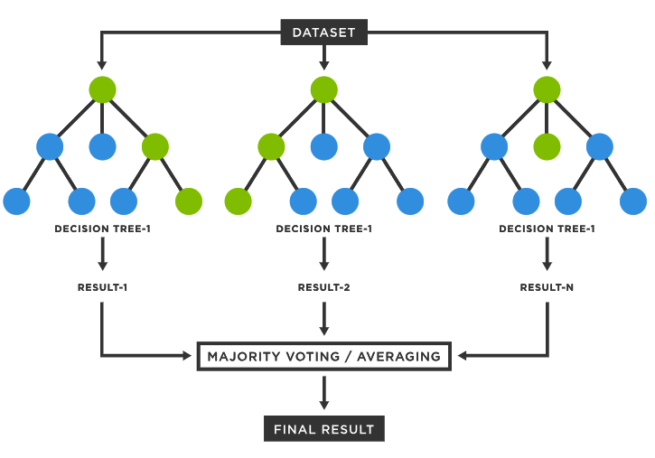
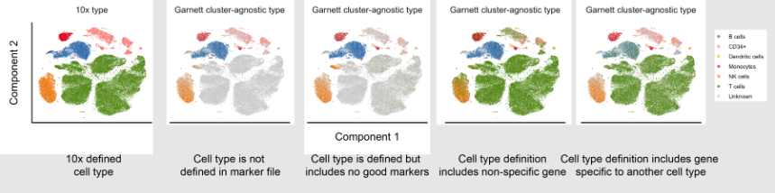

Automated Cell Annotation
Contributors
Questions
What is automated cell annotation?
How is automated cell annotation performed?
What methods are available?
What is the best method to choose for your data?
Objectives
Learn the different methods underlying automated cell annotation
Understand the data needed to annotate cells
Be able to choose the most appropriate method for your data
Recognise the common issues and be able to resolve them
Requirements
What is Cell Annotation?
-
Categorising cells into cell type categories based on transcriptomic data
-
Can be done manually or automatically
-
Is possible due to single-cell sequencing technology

Speaker Notes
Automated cell annotation uses gene expression data to classify unknown cells (often referred to as queries) into discrete “cell type” categories.
This process can be done manually or automatically using a wide range of algorithms and statistical methods
Why is it Important?
-
Able to process and analyse single cell data much faster than manual analysis
-
Can produce results more consistently allowing for reproducibility of results
-
Can uncover complex patterns in large amounts of data
Speaker Notes
Manually annotating cells can be time consuming and require domain expertise, with the advent of single-cell RNA sequencing (scRNA-seq) large amounts of individual cell data can be processed, on order to annotate this large data automated methods need to be produced.
Additionally these automated tools can help produce more consistent results and allow reproducibility as they are open and usable by anybody.
As mentioned earlier determining cell types can be complex with thousands of cell types and subtypes and large amounts of potential data to process, therefore automated analysis makes interpreting this data and uncovering complex patterns much easier.
Understanding our Data
.pull-right[

]
.pull-left[
What data should we use to classify cells?
-
Cell annotation uses sc-RNA seq data
-
Gene expressions are stored in a gene expression matrix (X)
Common data types:
- AnnData
- SingleCellExperiment
- CellDataSet
- Loom
- Seurat
]
Speaker Notes
Cells are classified using gene expression data derived from single-cell RNA sequencing, this data tells us which genes are being actively expressed in a cell at a given time.
The expression data is stored in a gene expression matrix where each row represents genes and each column represents individual cells, in the diagram this matrix is represented by the green box, all other boxes represent different types of metadata.
There are many different formats for storing this data and metadata, since different tools use different data types converting between them is a common task.
Challenges
-
Data is often noisy due to amplification techniques, varying sequencing depths, and errors in the reads
-
Cell type definitions are inherently subjective and may be suboptimal
-
Dealing with unknown cell types due to undiscovered classifications
Speaker Notes
There are some challenges that need to be faced in order to perform automated cell annotation:
-
Due to the process of reading the gene expression data from cells there can be a lot of noise introduced, algorithms should be robust to this noisy data to ensure accurate predictions are made. Additionally manually pre-processing the data (e.g. filtering poor quality reads) can help make the data more clean.
-
Humans like to place things into categories, even when there are no clear definitions/separations, therefore the process of deciding the different cell types can be tricky and requires some subjective decisions to be made. Due to this the categories used may not be perfect and could affect the performance of these algorithms.
-
Finally not all cell types are known and defined and we may end up running into them during our analysis, therefore it is important that our tools can handle undefined cell categories.
Manual Cell Annotation
-
Generate a cluster map and manually annotate each clusters
-
Requires the researchers to find known marker genes in the data

Speaker Notes
In order to manually annotate cell data you would first need to reduce the number of dimensions in your data so that you can produce cluster maps, this is done using a reduction method (PCA, tSNE, UMAP, etc)
Now that your data has been separated into distinct clusters you now need to manually annotate each individual cluster. This is typically done using known marker genes and their associated cell types.
The figure shows a graph for each marker gene we are interested in, it can be seen that each marker gene is only present in certain areas of our data, ideally these areas will be individual clusters.
Feature Selection
.pull-right[

]
.pull-left[
-
The process of identifying unique gene expressions that can be used for identifying cell types
-
Genes are selected based on how differently they are expressed across different cell types
]
Speaker Notes
Similar to manual annotation we need to use certain genes as indicators for determining each cell type (since certain gene profiles will correlate more strongly with certain cell types), these are referred to as features/marker genes.
The best gene expressions to use as features will be the ones that vary a lot across different cell type samples as certain gene expressions can be used as a ‘fingerprint’ for that certain cell type.
Features can be selected using various automated methods, some common methods include:
- M3Drop
- ScMarker
- Highly variable genes (HVGs)
Many tools allow you to choose how many features to use, performance will differ depending on the tool but as a general rule too many features will mean the useful information is too sparse and it will be difficult to find patterns, whereas too few features will lose a lot of useful information. It is best to first use the number of features recommended for the tool and make adjustments using that as a baseline.
Different Classification Methods

Speaker Notes
There are three primary types of methods that can be applied to classifying cell types
- Correlation based
- Cluster annotation using marker genes
- Supervised classification
Correlation-Based Methods
-
Compares the query with a reference dataset to find the most similar cells
-
Measures similarity using different distance metric scores
-
Can be applied at cell levels and cluster levels
.pull-right[

]
Speaker Notes
Correlation-based methods take the query and compares it to every cell/cluster in the reference dataset in an attempt to figure out which cells/clusters the query is most similar to. If the query has a strong similarity to a cell/cluster then it is probable that they share the same cell type classification, this idea is the basis of this method.
Similarity between the reference and the query is computed using various distance metric scores (cosine similarity, Pearson correlation, Spearman correlation, etc) and operates on gene expression data.
By using feature selection we can improve the efficiency of comparing each cell/cluster since there is less gene data to process. Additionally the reference data is stored as an n-dimensional feature space (where each gene is a separate dimension) which allows for the identification of clusters as well as faster searching using algorithms such as approximate nearest neighbour.
This method can be applied to entire clusters or to individual cells in the reference data. Applying the query to entire clusters can help reduce computation time but lacks accuracy, comparing the query to each individual cell yields much better accuracy with the expense of time.
Cluster Annotation with Marker Genes
-
Uses a known database of marker genes to identify cell types
-
Requires feature selection for comparison with the reference data
-
Can be limited by the datasets available
.pull-right[

]
Speaker Notes
Cluster annotation methods rely on known marker genes for identifying cell types. These genes are hand-selected features that can be used to uniquely identify different cell types. Using a database of marker genes, query data can be compared against the database to determine the most likely matching cell types.
In order to compare the query with known marker gene databases features need to be extracted from the query data, this can be done automatically using the methods described in the feature selection slide.
This method benefits from utilising a known database of cell type markers, these can be published and reused with different methods which allows for easy replication of results as well as allowing researchers to compare algorithms since the reference data remains constant.
This method has some downsides however, it can take a lot of prior manual labor and expertise in order to create an initial database of marker genes. The databases that are available can also limit which cell types can be annotated and may not contain the best marker genes.
Supervised Classification
.pull-left[
-
Trains a statistical classifier on reference data to predict cell types
-
Requires clean reference data for good quality models
-
Is able to handle higher dimensional and more noisy data

]
.pull-right[

]
Speaker Notes
Supervised classification trains a statistical model using some labelled reference data in order to learn a mapping between input data (gene expression values) and cell type categories.
There are many algorithms that can be used to train a classifier such as a Support Vector Machine, Artificial Neural Network, Random Forest Classifier, etc. However all these methods operate using some form of statistical analysis.
This method benefits from not requiring any human curated marker genes and is typically able to operate with more noisy data and can handle higher dimensionality data (which typically means being able to use more feature genes in the classification process).
However it should be noted that in order to train a classifier for identifying cell types a good reference dataset of labeled data is required. The size and accuracy of this data will affect the quality of the trained classifier, it can also be time consuming to train a accurate classifier for use in prediction. Additionally in order to use more reference data or add more classifications after training, you will need to either fine-tune or completely re-train the model using the additional data/classifications.
Comparison of Methods
| Approach | Description | Advantages | Limitations |
|---|---|---|---|
| Correlation based | Compares gene expression patterns between a query dataset and a reference dataset, using measures such as Pearson or Spearman correlation coefficients | Comprehensive annotation, flexibility with multiple references and data merging. Can be applied at cell and cluster level. Simple and fast to compute. | Performance decreases with the number of features used. Potential bias from reference selection. |
| Cluster annotation with marker genes | Matches the expression patterns of specific marker genes to reference cell types | Use of marker gene databases provides a comprehensive collection of known cell type markers. | Uncertain annotation if query data is not clean. Relies on human annotated known cell type markers for annotation. |
| Supervised Classification | Machine learning approach that learns the relationship between genes and cell types. | Robust to data noise and batch effects, higher accuracy with appropriate training. Can handle high dimensional data. | Training step is required which can be computationally intensive. Need to re-train or finetune an existing model to add more reference data. |
Speaker Notes
Here is an overview table presenting the information covered in the previous slides.
This can be used as a quick reference for what methods are available, an overview of how they work, and some things to consider when deciding which method is right for you.
Visualisation
-
Quick method to check the results of the annotation
-
Can be used to debug any issues with the tool’s predictions
-
Visualisation is available through many cell annotation tools

Speaker Notes
Visualisation can be an important step in classifying cell types, after processing the query data and generating predicted cell type labels it can be good to validate the predictions.
The easiest way to validate the predicted results is to plot the data on a graph and visually inspect the clusters, quickly inspecting the graph can help identify any errors in the classification process and determine what could be causing the issue.
The most common method to produce visualisations is to reduce the dimensionality of the data using methods such as UMAP, tSNE, PCA and plot the output on a 2-dimensional graph, each cluster can then be labelled with the predicted cell types.
Many tools for automated cell annotation offer the ability to plot the predicted data.
Common Issues
- Bad reference data
- A lot of noise in the data that hasn’t been filtered
- Pre-annotated cell labels are not correct
- Missing cell types
- Tools can only classify cell types that are available in the reference data!
-
Poor quality or missing markers
- Some tools perform poorly on certain data
Speaker Notes
When performing cell annotation with any tool you may encounter some issues where the annotations are largely wrong or unassigned, if this happens then there are some common things that you should check:
-
Ensure the reference data is clean: if the reference data is not labelled correctly or contains a lot of noise then this will affect the annotation tool (the tool will only ever be as good as the reference data!). In order to resolve this you may want to filter out poor quality data and possibly visualise the annotated data to check that the labels look correct.
-
Additionally it is important that the reference data matches the query data that you will be using, if the reference data used is from mouse cells and the queries are from human cells then the annotation tool will not contain the relevant knowledge to classify the cells.
-
If the tool being used relies on gene marker data it is important that the markers are good quality.
-
Different tools will perform better on certain data, it may be a good idea to do some research of the tool being used to ensure that it doesn’t perform poorly on the data you are using (if it does then using a different tool may be the best option!).
-
Finally many tools will have adjustable parameters that you can change (such as how many features to use for the input) it may be a good idea to play around with these values to see if it produces better results.
Key Points
- Automated cell annotation is a useful tool for automatically assigning cell type labels to cell data.
- There are various algorithms and methods that can be used for conducting cell annotation with each method having its own strengths and weaknesses.
- Automated cell annotation isn't perfect, when analysing results it's important to identify common issues that could occur.
Thank you!
This material is the result of a collaborative work. Thanks to the Galaxy Training Network and all the contributors! Tutorial Content is licensed under
Creative Commons Attribution 4.0 International License.
Tutorial Content is licensed under
Creative Commons Attribution 4.0 International License.